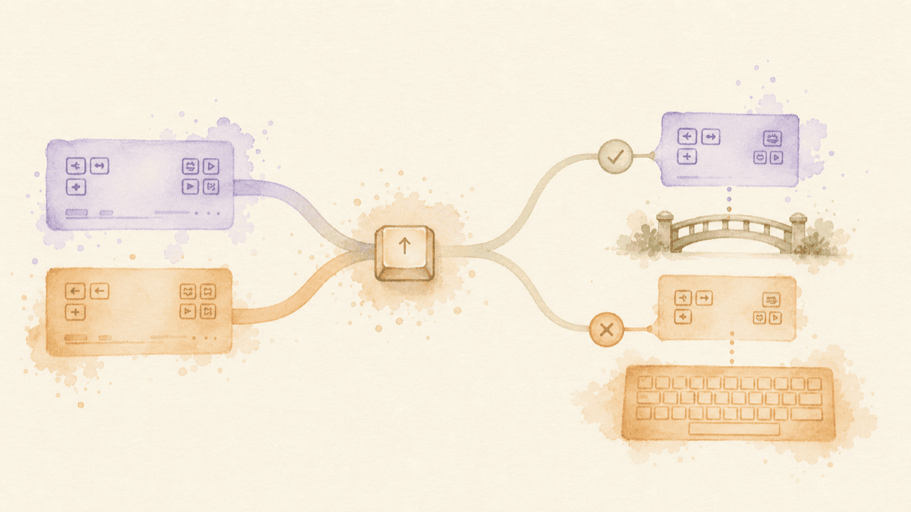

As your setup grows, two rules may try to control the same key. A rule can also rely on behavior supplied by another rule—for example, a home-row key that opens the Function layer needs that layer to contain useful actions.
KeyPath checks before it changes your setup. When it finds a problem, it pauses and explains what will happen so you can keep the current setup, switch rules, or continue intentionally.
The illustration above shows the two situations: rules meeting at the same key, and a rule using a bridge to reach behavior supplied elsewhere.
A key can have only one active behavior in the same place. If two rules both claim that key, KeyPath asks which rule you want to keep.
For example, Home Row Mods and Home Row Layer Toggles might both use the semicolon key:
Screenshot — choosing between two rules:
+----------------------------------+
| Switch to Home Row Layer |
| Toggles? |
| |
| Home Row Mods uses the same keys.|
| |
| [ Keep Home Row Mods ] |
| [ Switch to Layer Toggles ] |
+----------------------------------+The rule KeyPath turns off is not deleted. You can turn it on again later, at which point KeyPath will ask you to choose again if the conflict still exists.
Some packs are intentionally different ways to solve the same problem. When installing one would conflict with an installed pack, KeyPath uses the same Keep or Switch choice and names both packs before changing anything.
When a conflict is found while saving an edited rule, KeyPath shows the rules involved and lets you choose which one to disable:
Screenshot — resolving a conflict while saving:
+----------------------------------+
| Rule Conflict |
| |
| Two rules configure the ; key |
| with different behaviors. |
| |
| [ Disable Home Row Mods ] |
| [ Disable Layer Toggles ] |
+----------------------------------+Some rules work together rather than competing. KeyPath calls the supplied behavior a requirement. Common examples include:
KeyPath checks the behavior, not just a particular built-in rule name. If a different enabled rule already supplies the same behavior, your change proceeds without a warning.
If a change introduces a requirement that is not active, KeyPath shows the rule, the behavior it needs, and the affected keys or actions.
Screenshot — adding the rules a change needs:
+----------------------------------+
| Enable the rules this change |
| needs? |
| |
| Layer Toggles needs Function. |
| Provided by Function. |
| 2 affected keys: A and ; |
| |
| [ Save Without Them ] |
| [ Enable Required Rules & Save ] |
+----------------------------------+Choose based on what you want:
KeyPath offers the one-click fix only when each missing requirement has one clear provider. If several rules could provide the same behavior, KeyPath lists the possibilities and asks you to choose manually instead of guessing.
An old, already-acknowledged missing requirement will not interrupt an unrelated edit. The warning returns only when your new change introduces a new problem.
Before disabling a rule, KeyPath checks whether another enabled rule still uses what it supplies.
Screenshot — keeping behavior another rule uses:
+----------------------------------+
| Function is still used by |
| another rule |
| |
| Layer Toggles uses Function. |
| 2 affected keys: A and ; |
| |
| [ Disable Anyway ] |
| [ Keep Function Enabled ] |
+----------------------------------+If another active rule supplies the same behavior, KeyPath does not warn because the dependent rule will continue to work.
KeyPath keeps conflict resolution predictable:
When you are unsure, choose the emphasized safe action. You can inspect the rules involved and try the change again later.